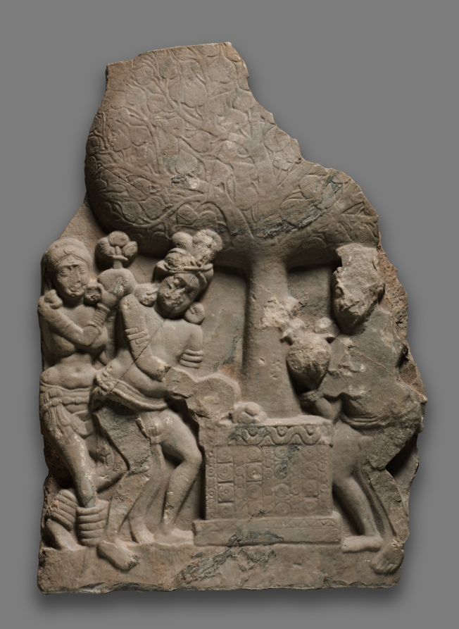
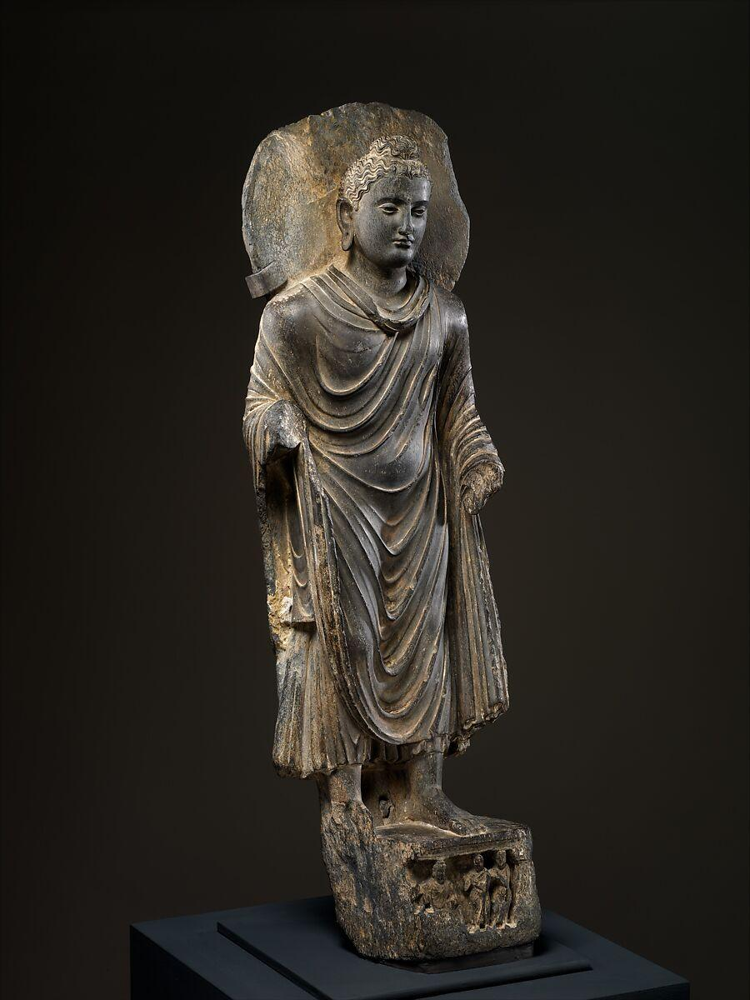
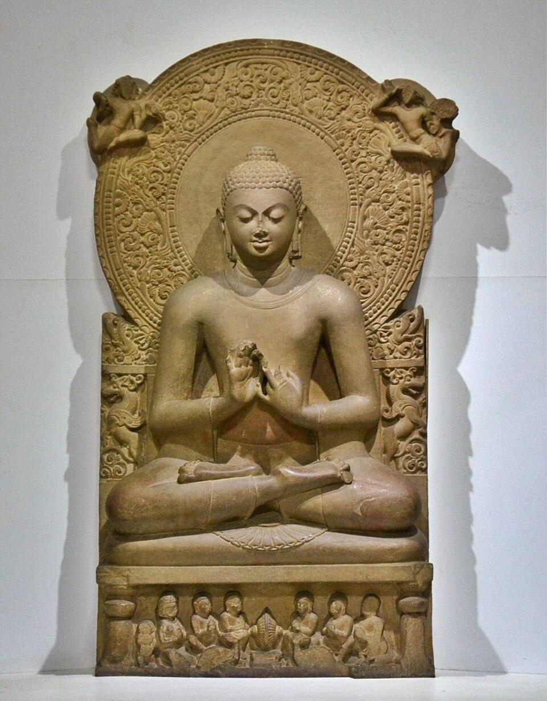
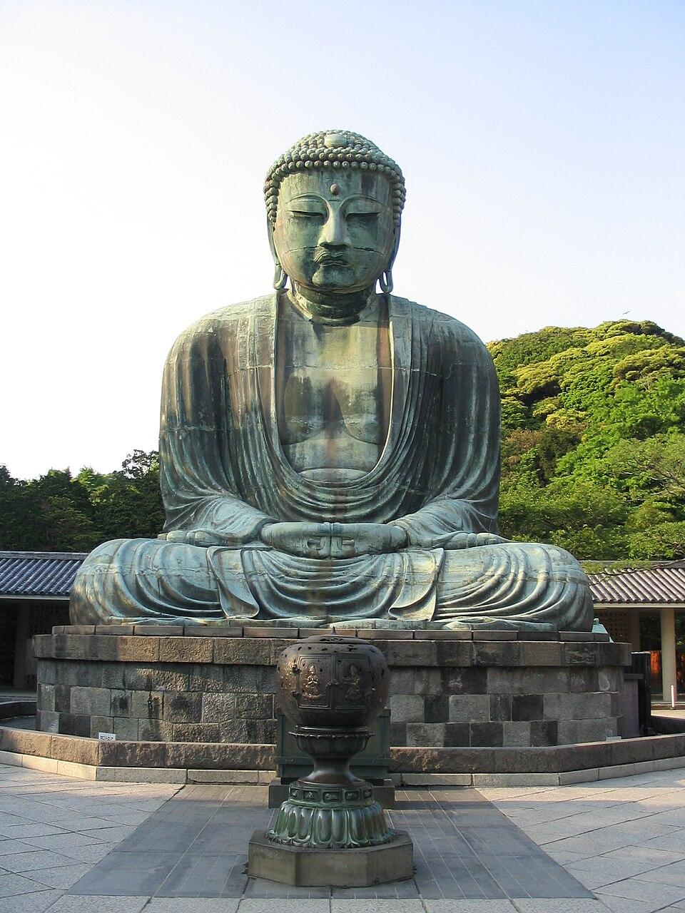
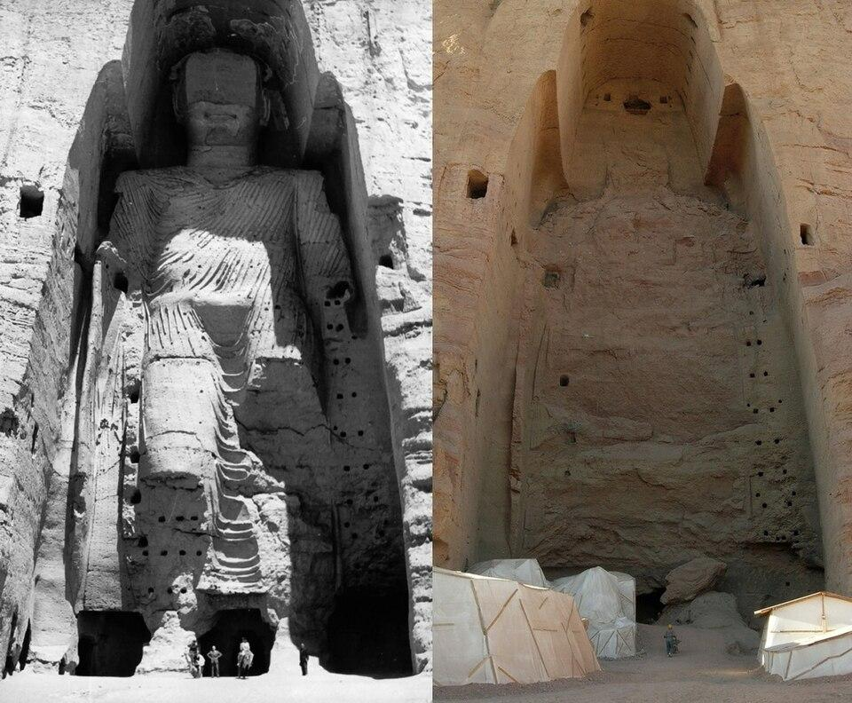

KIJK NU! / Door de tijd, vanaf de 1ste eeuw
Het Boeddhabeeld
Eén beeld door tijden en plaatsen, van de lege troon in Amaravati tot de lege nissen van Bamiyan
Waar en wanneer
- Wanneer
- Van de 1ste eeuw tot vandaag
- Waar
- India, Pakistan, Afghanistan, Japan
- Prehistorietot 3000 v.C.
- Oudheid3000 v.C.-500
- Middeleeuwen500-1400
- Renaissance1400-1600
- Barok1600-1715
- Rococo1715-1780
- Neoclassicisme en romantiek1780-1850
- Modernisme1850-1915
- Avant-gardes1915-1945
- Na de oorlog1945-1980
- Hedendaags1980-nu
hier hoort dit hoofdstuk thuishier verwijst het naar
- 5de eeuw v.C.Leven van Siddhartha Gautama, de Boeddha
- ca. 327 v.C.Alexander de Grote bereikt het noordwesten van India; de Griekse beeldtaal blijft er eeuwen aanwezig
- tot de 2de eeuwDe Boeddha wordt alleen met tekens getoond: een lege troon, een boom, voetafdrukken (Amaravati)
- 1ste-3de eeuwEerste beelden in mensengedaante, in Gandhara en Mathura
- 5de eeuwDe Boeddha van Sarnath houdt zijn eerste preek
- 6de-7de eeuwDe reusachtige Boeddha's van Bamiyan worden uit de rotswand gehouwen
- 1252Grote Boeddha van Kamakura, Japan
- 2001De taliban vernietigen de Boeddha's van Bamiyan
kunstwerken en teksten uit dit hoofdstukwat er in de wereld gebeurde
De namen in de strook komen uit de westerse kunstgeschiedenis. In India spreekt men voor deze eeuwen van de Kushana- en de Guptatijd.
Je hebt er al honderden gezien: in een museum, in een tuincentrum, op een reisfoto, in een restaurant. Een zittende figuur met gekruiste benen, de ogen half gesloten, een bult op het hoofd en lange oorlellen. Het Boeddhabeeld is een van de meest gemaakte beelden uit de geschiedenis van de kunst, en op het eerste gezicht lijkt het altijd hetzelfde.
Wie beter kijkt, ziet dat geen twee beelden gelijk zijn. De handen liggen in de schoot of raken de grond. Het gewaad valt in zware plooien of kleeft aan het lichaam alsof het nat is. Het gezicht lijkt op een Griekse god, op een Indiase prins of op een Japanse monnik. Elk van die verschillen zegt iets: over het moment uit het leven van de Boeddha dat het beeld toont, en over de plaats en de tijd waarin het gemaakt werd.
In dit hoofdstuk volg je één beeld door vijfentwintig eeuwen en over een heel continent. Je gebruikt daarbij het stappenplan van Panofsky uit het hoofdstuk over iconografie en iconologie. Tot nu toe paste je dat toe op werken uit Europa, bij verhalen die je min of meer kende. Hier doe je het met een beeldtaal die voor de meesten nieuw is.
1 Wie was de Boeddha?
Boeddha is geen naam maar een titel. Het woord betekent de ontwaakte: iemand die de werkelijkheid ziet zoals ze is. De man die zo genoemd wordt, heette Siddhartha Gautama. Hij leefde in het noorden van India, waarschijnlijk in de vijfde eeuw voor onze tijdrekening. De precieze jaartallen zijn onzeker.
Volgens de overlevering was hij een prins die opgroeide in weelde, afgeschermd van alles wat pijn doet. Op vier ritten buiten het paleis zag hij een oude man, een zieke, een dode en een rondtrekkende asceet. Hij verliet het paleis, zocht jarenlang naar een antwoord op het lijden, en vond het op zijn vijfendertigste, zittend onder een boom in Bodh Gaya. Daarna trok hij vijfenveertig jaar rond als leraar. Zijn eerste preek hield hij in het hertenpark van Sarnath. Hij stierf op zijn tachtigste in Kushinagar.
Die vier plaatsen en momenten komen in de kunst voortdurend terug: de geboorte, de verlichting, de eerste preek en de dood. Wie ze kent, kan de meeste Boeddhabeelden al plaatsen.
2 Eeuwen zonder beeld
Het oudste Boeddhabeeld dat we kennen, is gemaakt in de eerste eeuw van onze tijdrekening. Dat is vier tot vijf eeuwen na de dood van de Boeddha. In de tussentijd bestond er wel boeddhistische kunst, en veel ook: rond de stupa's, de grafheuvels waarin zijn relieken bewaard werden, stonden stenen omheiningen vol reliëfs met taferelen uit zijn leven. Alleen de hoofdpersoon ontbreekt. Op de plaats waar je hem verwacht, staat een teken.
- Een lege troon of een lege zetel onder een boom: de verlichting.
- Een wiel: de leer, en de eerste preek.
- Een paar voetafdrukken: hij is hier geweest.
- Een stupa: zijn dood en zijn relieken.
- Een paard zonder ruiter, met een parasol erboven: het vertrek uit het paleis.
Deze kunst zonder afbeelding van de hoofdfiguur noemen we aniconisch, van het Griekse an (niet) en eikoon (beeld). Waarom de vroege boeddhisten de Boeddha niet toonden, weten we niet zeker. Een geschreven verbod is nooit gevonden. Een vaak gegeven verklaring is dat iemand die het nirvana heeft bereikt, aan elke vorm ontsnapt is: hem een lichaam geven zou hem opnieuw vastleggen. Sommige onderzoekers lezen de reliëfs anders. Volgens hen tonen ze geen scènes uit het leven van de Boeddha, maar pelgrims die later de heilige plaatsen vereren, en is de troon gewoon een troon. De discussie is niet beslecht.
2.1 De lege troon van Amaravati


The Cleveland Museum of Art, Cleveland. Reliëf van de Grote Stupa van Amaravati.
Publiek domein. Afbeelding: The Cleveland Museum of Art, Open Access
Dit reliëf komt van de Grote Stupa van Amaravati, in het zuiden van India. Gelovigen brengen offers aan een boom, en nergens is de Boeddha te zien. Het British Museum bewaart van dezelfde stupa een steen die nog meer vertelt. Je bekijkt hem via de bronlink.bron De fiche en de bespreking hieronder gaan over die steen.
- Datering
- Ca. 50 v.Chr. (zijde met de troon) en ca. 250 n.Chr. (keerzijde)
- Herkomst
- Grote Stupa van Amaravati, Andhra Pradesh, India
- Materiaal
- Kalksteen
- Bewaarplaats
- British Museum, Londen
Wat zie je?
In het midden van de steen staat een lege troon. Erachter rijst een boom op, op de trede ervoor staan twee voetafdrukken. Links en rechts knielen gelovigen met de handen tegen elkaar. Boven de boom zweven twee hemelse wezens. Alle lichamen en blikken zijn naar het midden gericht, naar een plek waar niemand zit.
Wat stelt het voor?
De boom is de bodhiboom van Bodh Gaya, waaronder Siddhartha de verlichting bereikte. De troon is de zetel waarop hij zat. De voetafdrukken dragen elk een wiel, het teken van de leer. Samen zeggen de drie tekens dat de Boeddha aanwezig is, zonder dat hij te zien is. De gelovigen maken het gebaar van eerbied, de handen tegen elkaar voor de borst. De compositie werkt zoals bij een troonzaal: alles wijst naar de belangrijkste plaats. Dat die plaats leeg blijft, maakt ze niet zwakker. De kijker vult ze zelf in.
Twee kanten, twee tijden
Deze steen heeft een keerzijde. Rond 250, drie eeuwen later, werd de steen omgedraaid en opnieuw gebruikt. Op de nieuwe kant staat de stupa zelf afgebeeld, en in de poort staat de Boeddha, nu als mens. Eén steen toont zo de twee manieren om hem aanwezig te maken: eerst met tekens, later met een lichaam. Wat er in de tussentijd veranderd is, lees je in het volgende deel.
3 Het eerste beeld: Gandhara en Mathura
In de eerste en tweede eeuw van onze tijdrekening verschijnen de eerste beelden van de Boeddha als mens. Dat gebeurt op twee plaatsen ongeveer tegelijk, in hetzelfde rijk maar met een totaal verschillend resultaat. Gandhara ligt in het noordwesten, in het huidige Pakistan en Afghanistan. Mathura ligt in het hart van Noord-India, aan de rivier de Yamuna. Beide hoorden bij het rijk van de Kushana's. Welke van de twee het eerst was, is een oude twistvraag onder kunsthistorici.
Dat er net dan een beeld komt, heeft ook met het geloof te maken. In deze eeuwen groeit een vorm van boeddhisme waarin de Boeddha meer wordt dan een gestorven leraar: een wezen dat je kan vereren en aanroepen. Wie wil vereren, wil een gezicht zien.
3.1 Staande Boeddha uit Gandhara


The Metropolitan Museum of Art, New York. Schist, mogelijk uit het klooster van Takht-i-Bahi.
Publiek domein. Afbeelding: The Metropolitan Museum of Art, Open Access
- Datering
- Derde eeuw
- Herkomst
- Gandhara, mogelijk het klooster van Takht-i-Bahi (Pakistan)
- Materiaal
- Schist, een grijze leisteen
- Hoogte
- 92,7 cm
- Bewaarplaats
- The Metropolitan Museum of Art, New York
Wat zie je?
Een man staat rechtop, het gewicht op één been, de andere knie licht gebogen. Hij draagt een lang gewaad dat beide schouders bedekt en in zware, diepe plooien over het lichaam valt. Onder de stof tekenen zich de borst, de buik en de knie af. Het haar golft en is boven op het hoofd samengebonden tot een knot. Het gezicht is glad en jong, met een rechte neus, zware oogleden en een kleine mond. Tussen de wenkbrauwen zit een stip. Achter het hoofd staat een ronde schijf. De rechterhand is afgebroken.
De Griekse invloed
Zet dit beeld naast een Romeins keizerbeeld of een Griekse Apollo en je ziet de verwantschap. De houding met het gewicht op één been heet contrapposto en is een Griekse uitvinding. De plooien volgen de regels van de Griekse en Romeinse beeldhouwkunst: de stof is een toga geworden. Het golvende haar en het gezicht komen uit dezelfde traditie.
Dat is geen toeval. Alexander de Grote trok tussen 327 en 325 voor onze tijdrekening door deze streek. Na hem bleven er eeuwenlang Griekse koninkrijken bestaan, en via de handelswegen bleef het contact met de Romeinse wereld levendig. De beeldhouwers van Gandhara kenden de Griekse en Romeinse vormentaal en gebruikten ze voor een Indiaas onderwerp. De kunst die daaruit ontstond, noemen we Grieks-boeddhistisch.
Betekenis
De vorm is Grieks, de inhoud niet. De knot op het hoofd is de ushnisha, het teken van de hogere kennis van de Boeddha. De stip is de urna, de schijf een aureool. De lange oorlellen herinneren aan de zware oorringen die de prins aflegde. De ontbrekende rechterhand was vrijwel zeker opgeheven met de palm naar voren: vrees niet. Het museum merkt ook op dat het beeld uit de vroege, naturalistische fase van Gandhara stamt. Tegen het einde van de derde eeuw worden de beelden strakker en minder levensecht.
3.2 Mathura: een Indisch antwoord
In Mathura ziet de Boeddha er heel anders uit. Het bekendste vroege voorbeeld is de zittende Boeddha van Katra, van het einde van de eerste eeuw, in het museum van Mathura. De beeldhouwers werkten er in de plaatselijke rode zandsteen met lichte vlekken. Ze kenden de Griekse beeldtaal niet of hadden ze niet nodig. Hun voorbeeld waren de yaksha's, de krachtige natuurgeesten uit de oudere Indiase beeldhouwkunst.
De Boeddha van Mathura zit kaarsrecht, met brede schouders en een gespannen borst, alsof hij net heeft ingeademd. Het gewaad is zo dun dat het bijna onzichtbaar is en laat de rechterschouder bloot. Het hoofd is glad, met één opgerolde haarlok bovenop. Hij kijkt de bezoeker recht aan en glimlacht. De rechterhand is opgeheven.
| Gandhara | Mathura | |
|---|---|---|
| Steen | Grijze schist | Rode zandsteen met vlekken |
| Gewaad | Zwaar, met diepe plooien, over beide schouders | Dun en glad, rechterschouder bloot |
| Haar | Golvend, samengebonden in een knot | Glad hoofd met één opgerolde lok |
| Blik | Naar binnen gekeerd, oogleden half gesloten | Recht naar de kijker, met een glimlach |
| Lichaam | Naar Grieks en Romeins voorbeeld | Naar het voorbeeld van de Indiase yaksha's |
De twee scholen hebben elkaar snel beïnvloed. Uit hun ontmoeting groeit in de eeuwen daarna het beeld dat heel Azië zal overnemen.
4 Het beeld lezen
Een Boeddhabeeld is geen portret. Niemand wist hoe Siddhartha eruit had gezien. De beeldhouwers bouwden zijn lichaam op uit vaste tekens, zoals een christelijke schilder een heilige herkenbaar maakt met een attribuut. Wie de tekens kent, kan elk beeld lezen, waar het ook gemaakt is.
4.1 De kenmerken
De oude teksten sommen tweeëndertig lichaamskenmerken van een groot man op. Enkele daarvan vind je op bijna elk beeld terug.
- De ushnisha: de bult of knot boven op het hoofd, teken van hogere kennis.
- De urna: de stip of krul tussen de wenkbrauwen, waaruit licht straalt.
- De lange oorlellen: uitgerekt door de oorringen van de prins, die hij heeft afgelegd.
- Het haar in kleine krullen die naar rechts draaien, omdat hij het als asceet kort afsneed.
- De monnikspij zonder sieraden, over één of over beide schouders.
- De lotus als zetel: een bloem die zuiver uit de modder opstijgt.
- Het aureool achter het hoofd, soms een vlammende krans rond het hele lichaam.
4.2 De handgebaren
De handen van een Boeddhabeeld spreken. Elk gebaar, in het Sanskriet mudra, heeft een vaste betekenis en verwijst vaak naar één moment uit zijn leven.
| Mudra | Wat je ziet | Wat het zegt |
|---|---|---|
| Dhyana | Beide handen in de schoot, de rechter op de linker, palmen omhoog | Meditatie |
| Bhumisparsha | De rechterhand hangt over de knie en raakt de grond | De verlichting: de aarde is getuige |
| Abhaya | De rechterhand opgeheven, de palm naar voren | Vrees niet, bescherming |
| Varada | De hand hangt neer, de open palm naar voren | Geven, mededogen |
| Dharmachakra | Beide handen voor de borst, duim en wijsvinger tegen elkaar | Het wiel van de leer draaien: de eerste preek |
| Vitarka | Eén hand opgeheven, duim en wijsvinger in een cirkel | Onderricht, uitleg |
4.3 De houdingen
De Boeddha wordt in vier houdingen getoond. Zittend met gekruiste benen mediteert of onderwijst hij. Staand ontvangt hij de gelovige of zegent hij. Lopend, een houding die vooral in Thailand geliefd is, trekt hij als leraar door de wereld. Liggend op de rechterzij, het hoofd op de hand, sterft hij en gaat hij het nirvana binnen. Die laatste houding verwar je gemakkelijk met slapen of rusten. De context beslist: twee bomen, treurende monniken en dieren wijzen op de dood.
5 De Boeddha van Sarnath
In de vierde en vijfde eeuw, onder de Gupta-koningen, vloeien de vondsten van Gandhara en Mathura samen tot één evenwichtig type. Kunsthistorici spreken van het klassieke Indiase Boeddhabeeld. Het beroemdste voorbeeld werd gevonden op de plaats van de eerste preek. Je leest het hier met de drie stappen van Panofsky.


Archeologisch Museum, Sarnath. Zandsteen. Foto via Wikimedia Commons.
Foto via Wikimedia Commons. Maker en licentie staan op die pagina
.jpg){kind=link}
- Datering
- Vijfde eeuw, Guptaperiode
- Vindplaats
- Sarnath, bij Varanasi (India), opgegraven in 1904-1905
- Materiaal
- Zandsteen
- Hoogte
- 160 cm
- Bewaarplaats
- Archeologisch Museum, Sarnath
Stap 1: wat zie je?
Een figuur zit met gekruiste benen op een zetel, de voetzolen naar boven. Het lichaam is glad en slank, zonder spieren of plooien. Het gewaad is alleen te zien aan een fijne lijn bij de hals, de polsen en de enkels. De handen zijn voor de borst samengebracht, de vingers raken elkaar. De ogen zijn neergeslagen. Het hoofd is bedekt met kleine krullen en draagt een bult. Erachter staat een grote ronde schijf, rijk versierd met bladranken, met links en rechts een zwevende figuur. Onderaan, op de sokkel, knielen kleine figuren aan weerszijden van een wiel, met twee dieren ernaast.
Stap 2: wat stelt het voor?
De handen maken de dharmachakra mudra: de Boeddha draait het wiel van de leer. Dat gebaar hoort bij één gebeurtenis, de eerste preek. De sokkel bevestigt het. Het wiel in het midden is de leer zelf. De twee dieren zijn herten: het hertenpark van Sarnath. Vijf van de knielende figuren zijn de gezellen die zijn eerste monniken werden. De vrouw en het kind naast hen zijn waarschijnlijk de schenkers van het beeld. Ushnisha, krullen, lange oorlellen en aureool maken de figuur tot de Boeddha.
Stap 3: waarom zo?
Vergelijk met het beeld uit Gandhara. De Griekse plooien zijn verdwenen, de spieren ook. Het lichaam is geen lichaam van vlees meer, maar een gladde, rustige vorm. De beeldhouwer wil geen mens tonen die preekt, maar de toestand van volkomen rust van waaruit de leer gesproken wordt. Het beeld stond bovendien in Sarnath zelf, op de plaats waar het verhaal zich afspeelde. Een pelgrim die ervoor stond, zag de gebeurtenis en de plek samenvallen. In deze vorm, slank, glad en naar binnen gekeerd, is de Boeddha daarna door heel Azië nagevolgd.
6 Het beeld reist
Het boeddhisme verspreidde zich met monniken en handelaars. Naar het noorden volgde het de zijderoute door Centraal-Azië naar China, waar in de vijfde en zesde eeuw duizenden beelden in de rotswanden van Yungang en Longmen werden uitgehouwen. Via Korea bereikte het in de zesde eeuw Japan. Naar het zuiden ging het over zee naar Sri Lanka, Birma, Thailand, Cambodja en Java, waar rond het jaar 800 de Borobudur verrees, een berg van steen met honderden Boeddhabeelden.
Overal bleven de tekens dezelfde: de ushnisha, de oorlellen, de mudra's. Daardoor herken je de Boeddha in elk land. Tegelijk kreeg hij overal het gezicht van de mensen die hem maakten. In China worden de ogen smaller en het gewaad een Chinees hofkleed. In Thailand loopt de ushnisha uit in een vlam en wordt het lichaam soepel en lang. In Japan wordt het gezicht rond en ernstig. Iconografie en stijl gaan hier elk hun eigen weg: de eerste blijft, de tweede verandert.
6.1 De Grote Boeddha van Kamakura


Tempel Kotoku-in, Kamakura, Japan. Brons. Foto via Wikimedia Commons.
Foto: Dirk Beyer, via Wikimedia Commons, CC BY-SA 2.5

- Datering
- 1252
- Plaats
- Tempel Kotoku-in, Kamakura (Japan)
- Materiaal
- Brons, oorspronkelijk verguld
- Hoogte
- Ruim 11 meter, ruim 13 meter met de sokkel
- Voorstelling
- Amida, de Boeddha van het Reine Land
Wat zie je?
Een reusachtige bronzen figuur zit in de open lucht, met bomen en heuvels achter zich. De benen zijn gekruist, de handen rusten in de schoot. Het hoofd buigt licht naar voren, de ogen zijn bijna gesloten. Het gewaad valt in regelmatige, brede plooien over beide schouders en laat de borst open. Het brons is groen verweerd. Aan de voet van het beeld zijn de bezoekers niet groter dan een van de vingers.
Wat stelt het voor?
De handen liggen in de dhyana mudra, het gebaar van de meditatie. Bij dit beeld vormen de wijsvingers en duimen van elke hand bovendien twee cirkels. Aan die variant herken je Amida, in het Sanskriet Amitabha. Dat is niet de historische Boeddha Siddhartha, maar een hemelse Boeddha die heerst over het Reine Land in het westen. Wie zijn naam met vertrouwen aanroept, wordt daar na de dood herboren. In het Japan van de dertiende eeuw, geteisterd door oorlog en rampen, was dat geloof bijzonder geliefd, ook bij gewone mensen.
Betekenis
Het beeld was niet bedoeld om buiten te staan. Het zat in een houten hal. Die werd meer dan eens door stormen vernield en volgens de overlevering in 1498 voorgoed weggespoeld. Sindsdien zit de Boeddha onder de blote hemel. Voor veel bezoekers is dat net wat het beeld zo sterk maakt: de volkomen rust van de meditatie, midden in wind en regen. Dat is een betekenis die de makers niet voorzien hadden. Een kunstwerk kan er in de loop van zijn geschiedenis betekenissen bij krijgen.
7 Bamiyan: het beeld vernietigd


Bamiyan, Afghanistan. Foto's uit 1963 en 2008, via Wikimedia Commons.
Foto's via Wikimedia Commons, CC BY-SA 3.0. De makers staan op die pagina

- Datering
- Zesde tot begin zevende eeuw
- Plaats
- Vallei van Bamiyan, Afghanistan
- Techniek
- Uit de rotswand gehouwen, afgewerkt met leem en stucwerk en beschilderd
- Hoogte
- Ongeveer 55 meter en 38 meter
- Vernietigd
- Maart 2001
Wat stond er?
De vallei van Bamiyan ligt in het midden van Afghanistan, op een oude handelsweg tussen India, Perzië en China. In een rotswand van meer dan een kilometer lang waren twee staande Boeddha's uitgehouwen, elk in een eigen nis. De grootste was ongeveer 55 meter hoog, de kleinste 38 meter. Het lichaam was uit de rots gehakt. De plooien van het gewaad waren erop aangebracht in leem, afgewerkt met stucwerk en beschilderd. In die plooien herken je nog de verre echo van Gandhara. De Chinese monnik Xuanzang, die de vallei rond 630 bezocht, beschreef hoe de beelden schitterden van het goud. Rondom lagen honderden grotten waar monniken woonden.
Maart 2001
Op 26 februari 2001 beval mullah Omar, de leider van de taliban die toen het grootste deel van Afghanistan bestuurden, de vernietiging van alle beelden in het land. Regeringen, musea en ook islamitische geleerden uit andere landen probeerden hem op andere gedachten te brengen. In maart werden de twee Boeddha's met artillerie en dynamiet opgeblazen. Het duurde weken. De taliban filmden het en verspreidden de beelden zelf.
Waarom een beeld vernietigen?
Het opzettelijk vernietigen van beelden heet iconoclasme, letterlijk het breken van beelden. De taliban gaven een religieuze reden: de beelden waren afgoden, en afgoden horen niet te bestaan. Toch stonden de Boeddha's er al veertien eeuwen, waarvan ongeveer duizend jaar in een islamitisch land, en in Bamiyan woonden al lang geen boeddhisten meer die ze vereerden. Onderzoekers wijzen daarom ook op andere motieven: woede over de internationale sancties, de wens om de wereld te tonen wie de baas was, en de zekerheid dat net dit de aandacht van de hele wereld zou trekken.
Dat laatste zegt iets over beelden. Wie een beeld vernietigt, vindt het niet onbelangrijk. Hij erkent net dat het macht heeft. In Europa is dat niet anders geweest: tijdens de Beeldenstorm van 1566 werden in onze streken in enkele weken tijd honderden kerken leeggehaald.
Lege nissen
In 2003 plaatste UNESCO de vallei van Bamiyan op de Werelderfgoedlijst en tegelijk op de lijst van het bedreigde werelderfgoed. Daar staat ze in 2026 nog altijd op. Sinds 2021 besturen de taliban het land opnieuw en bewaken ze de plek die ze zelf verwoestten. Over de vraag of de beelden herbouwd moeten worden, is geen akkoord. Voorstanders willen de vallei haar gezicht teruggeven. Tegenstanders vinden dat een reconstructie de geschiedenis uitwist, en dat de lege nissen zelf een monument geworden zijn. In 2015 werd een van de Boeddha's één nacht lang met licht in zijn nis geprojecteerd.
Vergelijk de lege nis met de lege troon van Amaravati. In beide gevallen kijk je naar een plaats waar de Boeddha niet te zien is. De eerste leegte is gekozen, de tweede is aangedaan.
Woordenschat
Geen woord gevonden. Probeer een ander zoekwoord.